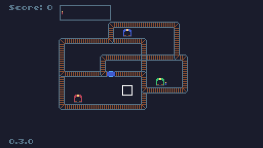
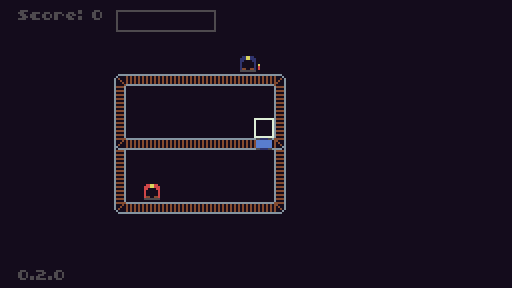
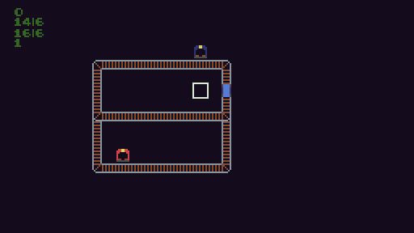

Train-Fic (Changelog)
Page française
Play on tic.computer 
0.3.0
- Change in the palette (from the TIC-80 palette to Sweetie-16 modified)
- Change in the map
- Added third train station (the green station) and the travallers in this color

Play here Download l'HTML
03/14/2018
0.2.0
- Travellers added
- Added travellers display beside the station
- Added train's content in top of screen
- Added score, in fuction of the number of travellers carried

Play here Download l'HTML
03/10/2018
0.1.0
- Added train movements
- Added rails and switches
- Sprite design
- Added stations

Play here Download HTML
03/07/2018